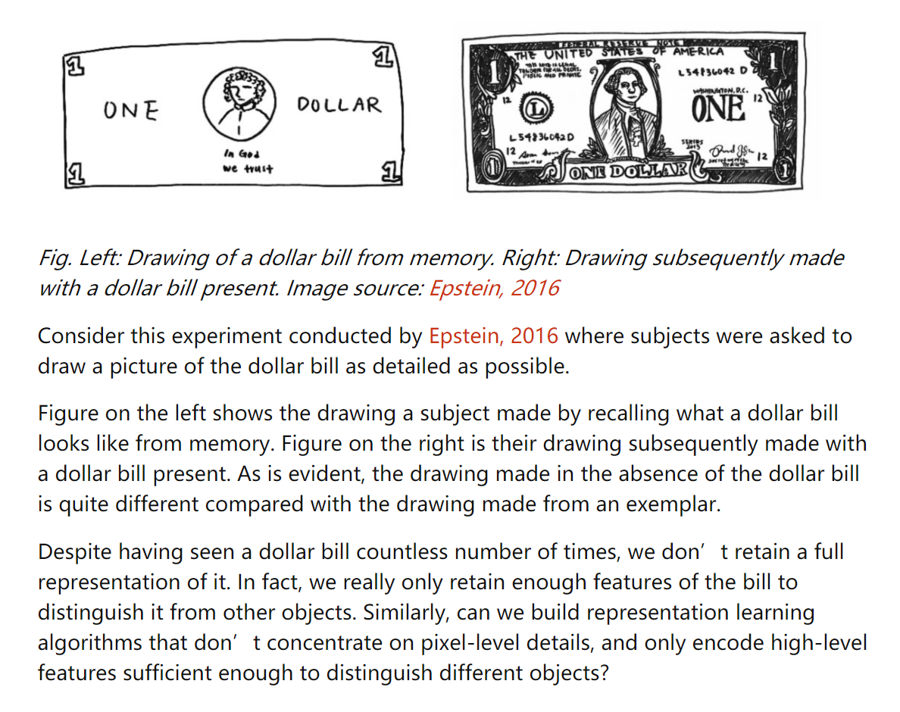

对比学习论文笔记
2021-06-18
1 对比学习
它来了，它来了，对比学习携数据增强一起成团出道了，从CV到NLP都是妥妥的绝杀~当然了对比学习是cv领域率先提出的，鉴于笔者平时偏好nlp领域，因此本文主要介绍对比学习在nlp领域的相关研究进展，附带一些经典的cv领域的额对比学习进展，毕竟LeCun，Bengio，Hinton 和 Kaiming这种巨巨巨。。。佬都是在cv领域神仙打架。
1.1 从深度学习讲起
深度学习的一个重要的趋势是表示学习：Representation-Learning，学好了样本的表示可以直接用在一些不涉及逻辑、推理等的问题上，例如判断句子的情感极性、对图像进行目标检测（识别图像中包含哪些东西)。再例如文本领域从word2vec发展到bert等预训练模型，越来越多的工作都关注到表示学习上了。
对比学习的目的也是为了更好的学习样本的表示,那问题来了，文本表示学什么？举个例子：contrative-self-supervised-learning

有人做了一个实验，要求一个人画一张美元图，右图是真实的美元，左边是这个人凭记忆画的美元图， 这个实验想表达的一个核心思想就是：尽管我们已经见过很多次钞票长什么样子，但我们很少能一模一样的画出钞票；虽然我们画不出栩栩如生的钞票，但我们依旧可以轻易地辨别出钞票。基于此，也就意味着表示学习算法并不一定要关注到样本的每一个细节，只要学到的特征能够使其和其他样本区别开来就行，这就是对比学习和对抗生成网络（GAN）的一个主要不同所在。PaperWeekly
因此表示学习不一定是学习到样本特征的方方面面，只要能学习到样本特有的特征，能够与其他的样本区分开就行了。
So~对比学习到底在对比什么？其实就是学习一个函数映射的关系，公式如下：
\[ \operatorname{score}\left(f(x), f\left(x^{+}\right)\right)>>\operatorname{score}\left(f(x), f\left(x^{-}\right)\right) \]
- here \(x^{+}\) is data point similar or congruent to \(x\), referred to as a positive sample.
- \(x^{-}\) is a data point dissimilar to \(x\), referred to as a negative sample.
- the score function is a metric that measures the similarity between two features.
\(x^{+}\)是本\(x4\)相似的样本记为正例，\(x^{-}\)是和\(x\)不相似的样本记为负例。score是衡量两个样本的相似度。因此这个公式也非常好理解：相似样本的距离要远远大于不相似样本的距离。
\(x\) is commonly referred to as an “anchor” data point. To optimize for this property, we can construct a softmax classifier that classifies positive and negative samples correctly. This should encourage the score function to assign large values to positive examples and small values to negative examples:
\[ \mathcal{L}_{N}=-\mathbb{E}_{X}\left[\log \frac{\overline{\exp \left(f(x)^{T} f\left(x^{+}\right)\right)}}{\exp \left(f(x)^{T} f\left(x^{+}\right)\right)+\sum_{j=1}^{N-1} \exp \left(f(x)^{T} f\left(x_{j}\right)\right)}\right] \]
\(x\)一般称’锚’点,为了优化这一特性，可以构造一个能正确分类正样本和负样本的softmax分类器。
The denominator terms consist of one positive, and \(N-1\) negative samples. Here, we have used the dot product as the score function:
\[ \operatorname{score}\left(f(x), f\left(x^{+}\right)\right)=f(x)^{T} f\left(x^{+}\right) \]
This is the familiar cross-entropy loss for an \(N\) -way softmax classifier, and commonly called the InfoNCE loss in the contrastive learning literature. It has been referred to as multi-class n-pair loss and ranking-based NCE in previous works. The InfoNCE objective is also connected to mutual information. Specifically, minimizing the InfoNCE loss maximizes a lower bound on the mutual information between \(f(X)\) and \(f\left(X^{+}\right)\). See Poole et al., 2019 for a derivation and more details on this bound.